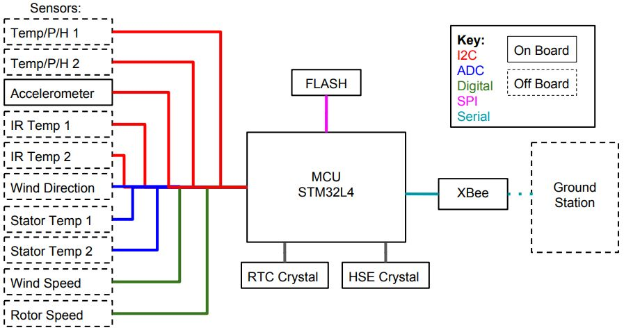
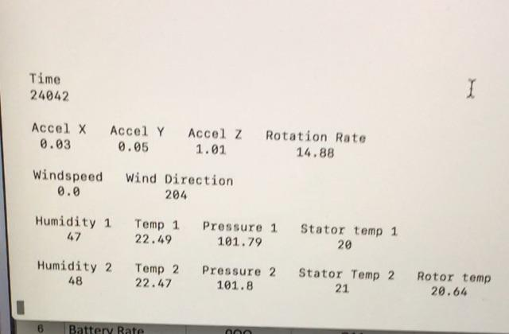

Wind Turbine Data Transmitter


This project was a collaboration between the Portland State Electrical & Computer Engineering department and a sponsor company that manufactures small-scale wind turbines. The goal of this project was to develop a data acquisition system to remotely monitor the health and status of wind turbines. In addition to leading the team, I took on the firmware development to expand my experience with coding and working with microcontrollers.
Component Selection
The sponsor company requested that the following data be collected at the following sample rates:
- Accelerations - 3 Axis: 120Hz
- Turbine Rotation Rate: 50Hz
- Wind Speed: 1Hz
- Wind Direction: 1Hz
- Ambient Temperature: 1Hz
- Ambient Pressure: 1Hz
- Ambient Humidity: 1Hz
- Stator Temperature: 1Hz
- Rotor Temperature: 1Hz
Sensors, Flash memory, an MCU and a radio that met criteria for operating temperature range for power usage were selected. The system contains components that communicate via I2C, SPI, Serial, and analog signals:
Firmware Overview
The firmware was developed in C and executed on an STM32L4 discovery board. A simplified overview of the main loop is shown below:

An interrupt driven by the real time clock fires at a regular interval. This wakes the device up and runs the main loop. The mode is determined based on the state of the rotor speed variable. Counters in the main loop increment upon each wakeup and trigger routines to collect data from sensors at the various sample rates. The raw data is stored in FIFO (First in First Out) buffers.
The main loop counters also drive the data in the FIFO buffers to be read out, processed, packetized, and saved to a FIFO buffer in the flash. The data remains in flash until it is successfully sent to the host. The device goes into sleep mode to save power and wakes up at the next RTC interrupt. Some combination of all of these processes occur 120 times a second in powered mode.
Acceleration Sensing
An LIS3DH MEMS accelerometer by STMicroelectronics was chosen for this device - it provides adequate resolution and consumes little power. A software low-pass filter was added to reduce noise.
Rotation Rate and Rotor Temperature Sensing
A Hall effect sensor measures rotation rate by sensing rotor magnet passes. Two IR temperature sensors measure the temperature of the rotor magnets. The plot below shows sensed rotor speed and rotor temperature for a trial ramping from 25 - 100 RPM.
Environmental Conditions Sensing
Two I2C devices sense environmental temperature, pressure, and humidity. An anemometer and wind vane sense wind speed and direction. The annemometer outputs a sinusoid of varying amplitude and frequency. To trigger an interrupt with a digital signal, the anemometer signal passes through a comparator.
Wireless Communication
Communication between the device and the host occurs via a wireless serial link between two Xbee radios. All of the data to be sent between the device and host is formatted into one of eight standardized packet types. Each packet type contains data from different sensors. A python script was written to interpret and display the data contained in these packets at the ground station.
Two measures are in place to verify data integrity. If either check fails, the ground station requests a re-send.
- A counter variable is embedded in each packet as it is saved to flash.
- A CRC-8 is computed and stored as the 14th byte in each packet.
Results
Firmware functionality was demonstrated on the breadboarded system by collecting data from a test setup at the sponsor's facility. The firmware was delivered to the sponsor company for use on the forthcoming pcb prototype.